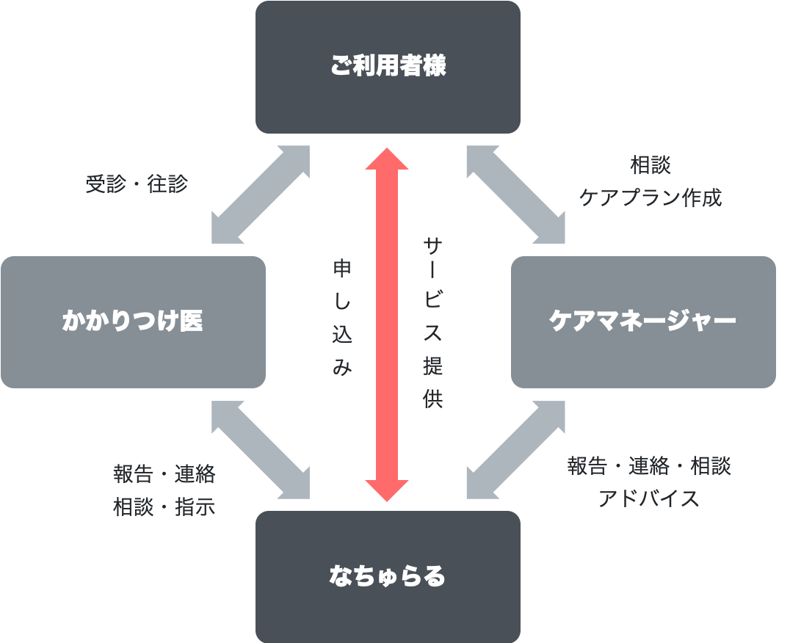

サービスの内容
健康状態や病状の観察・相談
- 血圧・体温・脈拍などの測定
- かかりつけ医の指導に基づく医療処置
- 内服管理・食事指導
医療機器の管理・処置
- 点滴やカテーテルなどの医療処置
- 在宅酸素や人工呼吸器の管理
療養上のお世話
- 身体の清拭や入浴介助
医療・介護の相談
- ご家族の状況に配慮した介護指導や様々な相談対応
在宅でのリハビリテーション
- 拘縮予防や機能の回復、嚥下機能訓練等
ターミナルケア
- 自宅で過ごせるような適切なサポート
訪問看護サービスの流れ

- ※主治医等を介さず直接「なちゅらる」へお問い合わせ頂いても構いません
- ※入院中の方が、退院後に訪問看護のご利用を検討される場合は、訪問看護師が病院に伺い医師、病院看護師などと相談の上、退院後の生活、在宅医療、訪問看護利用の調整を致します
訪問対象者
介護保険対象の方
| 看護 | 30分 4,690円 / 1時間 8,190円 |
|---|---|
| リハビリ | 20分 2,970円 |
医療保険対象の方
| 看護 | 週3日まで5,550円/回 週4日以降6,550円/回 |
|---|---|
| 別途 | 訪問看護管理療養費 月の初回 7,440円/月 2回目以降 3,000円/月 |
- ※負担割合に沿った自己負担があります
- ※別途加算あり
訪問エリア
宮崎市内
（田野町・高岡町を除く）
（田野町・高岡町を除く）
- ※その他の地域でもご相談ください
- ※緊急時24時間365日対応いたします
アクセス
会社概要
| 営業時間 | 月曜日〜金曜日 / 8:30〜17:30 |
|---|---|
| 定休日 | 土日祝日・お盆・年末年始 |
| 所在地 | 〒880-0879 宮崎県宮崎市宮崎駅東 3-2-2 セリオ203 |
| 連絡先 | 電話: 0985-77-7680 FAX: 0985-77-7681 e-mail: natural.0901@iaa.itkeeper.ne.jp |